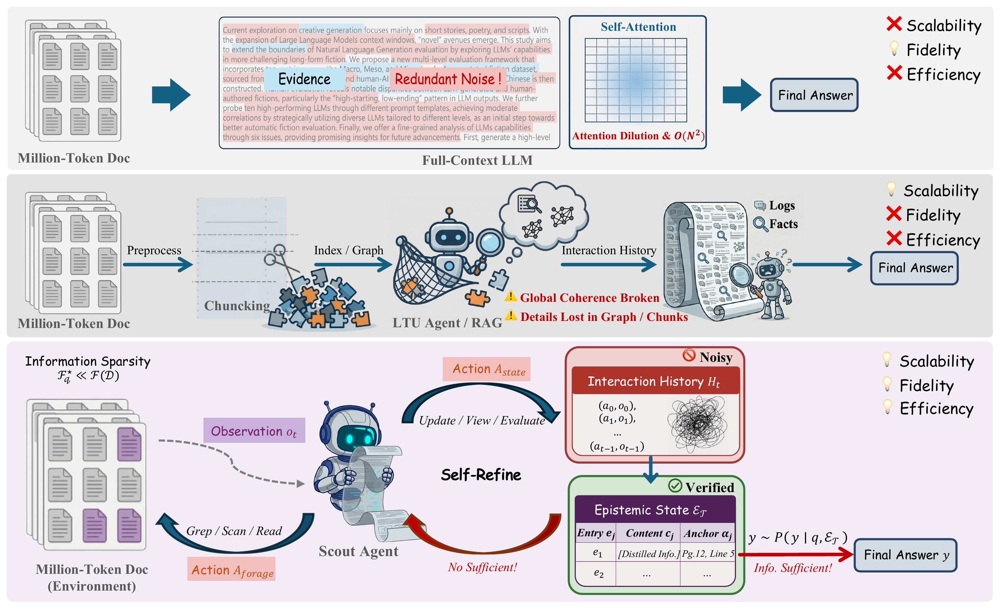
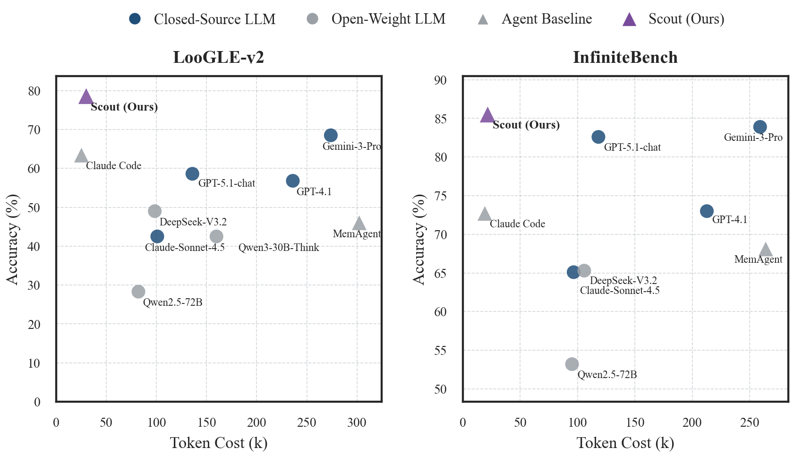
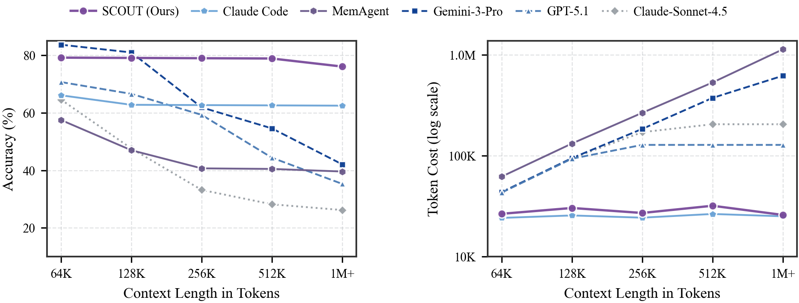

Abstract
Long-Text Understanding (LTU) at million-token scale requires balancing reasoning fidelity with computational efficiency. Frontier long-context LLMs can process millions of token contexts end-to-end, but they suffer from high token consumption and attention dilution. In parallel, specialized LTU agents often sacrifice fidelity through task-agnostic abstractions like graph construction or indexing. We identify a key insight for LTU: query-relevant information is typically sparse relative to the full document, so effective reasoning should rely on a query-sufficient subset rather than the entire context.
To address this, we propose SCOUT, a new paradigm for LTU that shifts from passive processing to active information foraging. It treats the document as an explorable environment and answers from a compact, provenance-grounded epistemic state. Guided by state-level gap diagnosis, SCOUT adaptively alternates between coarse-to-fine exploration and anchored state updates that progressively contract its epistemic state toward query sufficiency.
Experiments show that SCOUT matches state-of-the-art proprietary models while reducing token consumption by up to 8×. Moreover, SCOUT remains stable as context length scales, substantially alleviating the practical cost–performance trade-off.
The LTU Trilemma
We identify the LTU Trilemma: systems struggle to simultaneously satisfy three desiderata for million-token understanding. Existing paradigms each sacrifice at least one.
Scalability
Robustness as context length grows from 64K to over 1M tokens, without degradation in accuracy.
Information Fidelity
Faithful reasoning that preserves nuance and long-range dependencies without lossy compression or fragmentation.
Inference Efficiency
Low token cost that avoids brute-force ingestion of the full document, keeping inference practical at scale.
Method
SCOUT reframes LTU as goal-directed information foraging under partial observability. Rather than processing the entire document or pre-building task-agnostic structures, SCOUT treats the document as an explorable environment and navigates it on demand.
The key innovation is state decoupling: SCOUT separates the growing interaction history (procedural trace) from a compact Epistemic State that serves as the sole reasoning substrate. Each entry in the epistemic state is a provenance-anchored unit ⟨content, anchor⟩ traceable to the source text.
The agent alternates between foraging actions (Grep, Scan, Read) for multi-resolution exploration and epistemic management actions (Update, View, Evaluate) that commit verified knowledge and diagnose information gaps, driving the epistemic state toward query sufficiency.

Paradigm comparison and SCOUT overview. Top: Full-context LLMs ingest the entire sequence, suffering attention dilution and quadratic cost. Middle: Chunking/RAG agents improve scalability but break global coherence and lose details. Bottom (ours): SCOUT treats the document as an explorable environment and decouples the noisy interaction history Ht from a verified Epistemic State εt. The agent iteratively forages, distills provenance-anchored knowledge, and converges toward query sufficiency.
Main Results
We evaluate SCOUT on two challenging benchmarks: LOOGLE-V2 (long-dependency reasoning) and ∞BENCH (ultra-long scale). Under a Unified Backbone Protocol (all agents use Claude-Sonnet-4.5), SCOUT achieves the highest accuracy on both benchmarks with the best token efficiency.

Comprehensive accuracy–cost tradeoff. SCOUT (purple triangle) achieves Pareto-optimal performance on both benchmarks, combining the highest accuracy with the lowest token cost among all methods.
LOOGLE-V2
| Category | Method | Overall Acc (%) | Cost (k) | Token Eff. |
|---|---|---|---|---|
| LLMs | GPT-4.1 | 56.8 | 236.0 | 0.24 |
| Gemini-2.5-Pro | 56.2 | 258.1 | 0.22 | |
| Claude-Sonnet-4.5 | 42.5 | 100.9 | 0.42 | |
| GPT-5.1-chat | 58.6 | 135.9 | 0.43 | |
| Gemini-3-Pro | 68.5 | 273.9 | 0.25 | |
| Agents | ReadAgent | 27.7 | 302.6 | 0.09 |
| GraphReader | 31.6 | 408.1 | 0.08 | |
| MemAgent | 46.0 | 302.2 | 0.15 | |
| Claude Code | 63.4 | 25.3 | 2.51 | |
| Ours | SCOUT | 78.7 | 29.7 | 2.63 |
∞BENCH
| Category | Method | Overall Acc (%) | Cost (k) | Token Eff. |
|---|---|---|---|---|
| LLMs | GPT-4.1 | 73.0 | 212.7 | 0.34 |
| Gemini-2.5-Pro | 81.9 | 245.4 | 0.33 | |
| Claude-Sonnet-4.5 | 65.1 | 96.6 | 0.67 | |
| GPT-5.1-chat | 82.6 | 118.2 | 0.70 | |
| Gemini-3-Pro | 83.9 | 259.1 | 0.32 | |
| Agents | ReadAgent | 42.3 | 481.8 | 0.09 |
| GraphReader | 43.1 | 327.4 | 0.13 | |
| MemAgent | 68.1 | 264.0 | 0.26 | |
| Claude Code | 72.7 | 19.2 | 3.79 | |
| Ours | SCOUT | 85.6 | 21.4 | 4.01 |
Alleviating the LTU Trilemma
As context length scales from 64K to over 1M tokens, SCOUT maintains near-flat accuracy and near-constant token cost, while frontier monolithic LLMs degrade sharply in accuracy and see costs increase by orders of magnitude. SCOUT remains near the Pareto frontier, simultaneously achieving strong fidelity, efficiency, and scalability.

Left: Accuracy remains near-flat for SCOUT as context grows. Right: Token cost stays nearly constant (log scale), while monolithic models grow rapidly.
Training Gains under SCOUT
With controlled post-training budgets (~60M optimization tokens), LLM-only SFT yields marginal gains for million-token LTU. In contrast, training the same backbone within the SCOUT paradigm produces substantially larger improvements. DAPO further amplifies these gains, demonstrating that the dominant bottleneck is not raw parametric knowledge but long-horizon interaction and state control—the missing structure that SCOUT supplies.
| Backbone | Regime | LOOGLE-V2 (LLM) | LOOGLE-V2 (SCOUT) | ∞BENCH (LLM) | ∞BENCH (SCOUT) |
|---|---|---|---|---|---|
| Qwen2.5-72B | Vanilla | 24.0 | 28.3 | 49.4 | 53.2 |
| +SFT | 25.1 (+1.2) | 55.4 (+27.1) | 48.7 (-0.7) | 78.3 (+25.1) | |
| +DAPO | – | 35.1 (+6.8) | – | 60.8 (+7.6) | |
| Qwen3-30B-A3B | Vanilla | 40.8 | 41.2 | 55.5 | 65.4 |
| +SFT | 40.3 (-0.5) | 54.2 (+13.0) | 57.1 (+1.6) | 75.8 (+10.4) | |
| +DAPO | – | 45.1 (+3.9) | – | 68.8 (+3.4) |
BibTeX
@inproceedings{zhang2026scout,
title={SCOUT: Active Information Foraging for Long-Text Understanding with Decoupled Epistemic States},
author={Zhang, Zhenliang and Wang, Wenqing and Hu, Yong and Yang, Yaming and Gao, Jiaheng and Shen, Chen and Wan, Xiaojun},
booktitle={Proceedings of the 43rd International Conference on Machine Learning (ICML)},
year={2026}
}